Префектура Сага · Уресино · чай и онсэн
Чайный туризм Уресино: ехать за чашкой чая и остаться ради онсэна
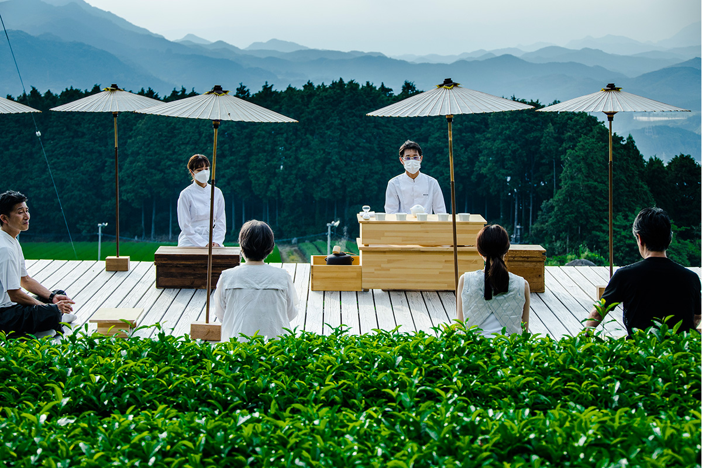
В Уресино на западе префектуры Сага чай выращивают больше 500 лет, а горячие источники бьют из земли уже 1300 лет. Местные фермеры и хозяева рёканов решили поменять их местами: сначала чай, потом онсэн.
Идея
Сначала чай, потом онсэн
Уресино знают в Японии по двум причинам. Онсэн Уресино входит в тройку источников, которые японцы называют «водами для красивой кожи», а чай Уресино считается одним из лучших зелёных чаёв страны. Есть и третья традиция: фарфор Хидзэн-Ёсида, которому около 400 лет, хорошо знаком японцам по чайникам и чашкам. Чтобы в одном провинциальном городе жили сразу три таких ремесла, в Японии почти не бывает.
Долгое время поездка в Уресино строилась по одной схеме. Гости ехали на источники, в рёкане им наливали чай, он оказывался неожиданно вкусным, и только тогда они узнавали, что попали в чайный край. Проект «Уресино тядоки», что значит «Время чая в Уресино», с 2016 года переворачивает эту схему: человек едет сюда ради чашки чая, а раз уж здесь есть онсэн, остаётся на ночь. Так появился чайный туризм, путешествие за чаем.
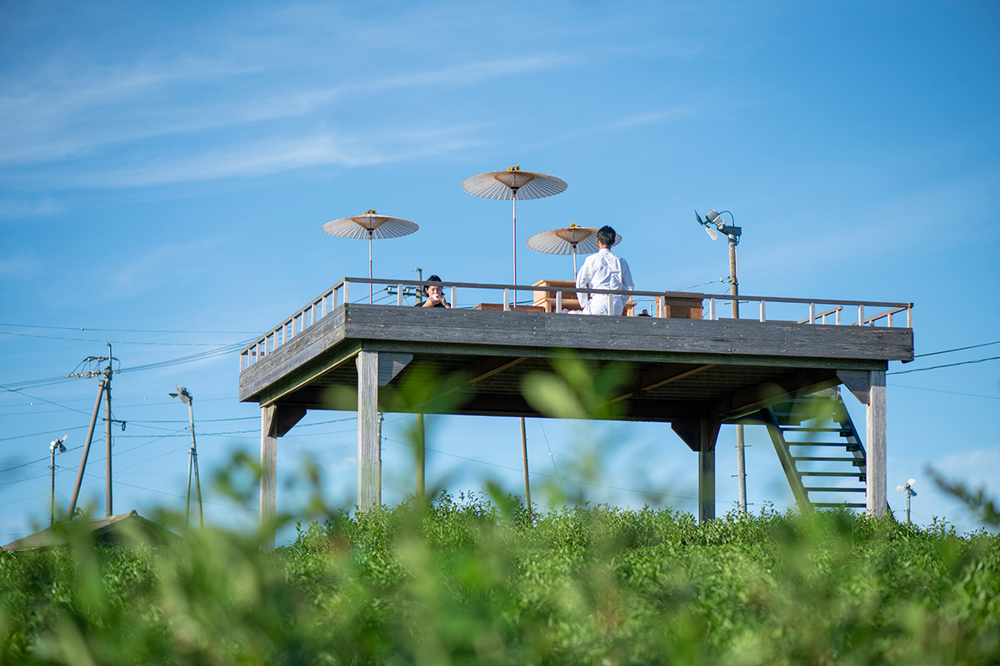
В проекте участвуют сами жители Уресино: хозяева рёканов, чайные фермеры, мастерские фарфора Хидзэн-Ёсида, по большей части наследники семейных дел, а также повара. Идею проекта они объясняют просто: заново прочитать то, что досталось городу от предков, и передать это следующему поколению в понятной ему форме. В 2022 году, к открытию скоростной линии Ниси-Кюсю синкансэн «Камомэ», железнодорожная компания Кюсю учредила премию за туристические проекты, которые оживляют города региона. Главную награду получил «Уресино тядоки».
Чайные площадки
Чай там, где он растёт
Главное в чайном туризме Уресино это чайные площадки, которые фермеры устроили прямо на своих плантациях. Чай здесь заваривает тот, кто его вырастил: фермер рассказывает, как ухаживает за кустами и чем отличаются сорта, а гость пьёт и спрашивает. Для фермеров, которые раньше только работали в поле, это тоже открытие: оказалось, что их обычный день на плантации интересен путешественникам сам по себе. По данным 2025 года, таких площадок в городе четыре. На церемонию можно попасть и без проживания в рёкане, но только по предварительной записи.
«Тэнтядай»: чайный помост над городом
Самая известная площадка, «Тэнтядай», стоит на плантации старинной чайной фермы «Соэдзима-эн». Это открытый деревянный помост на холме высотой около 200 метров, и чай здесь пьют, глядя сверху на город с онсэнами и на горы за ним. Именно церемонии на «Тэнтядай» принесли проекту известность.
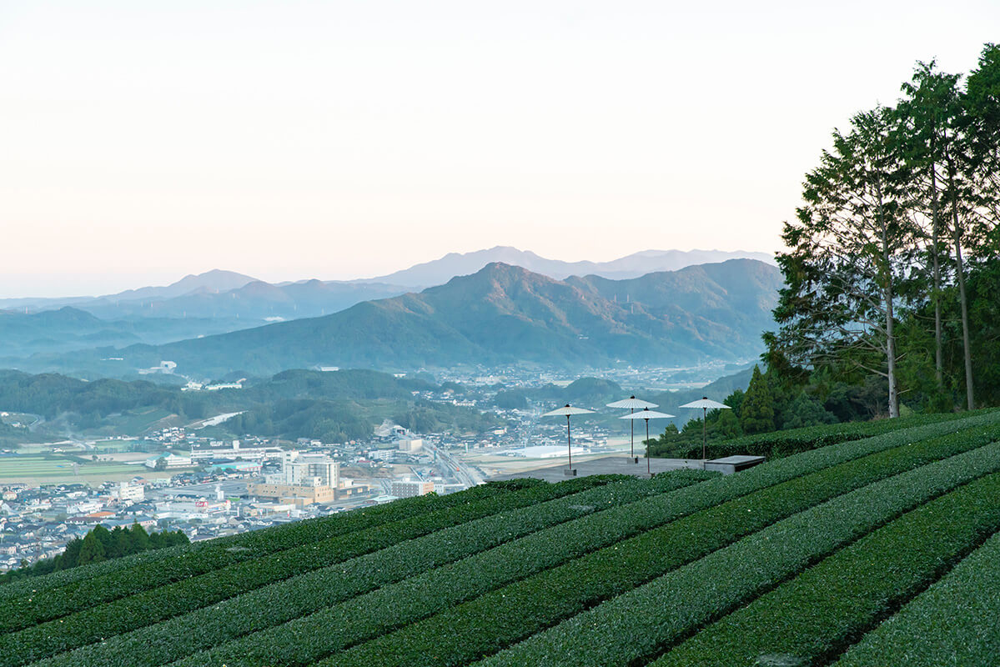
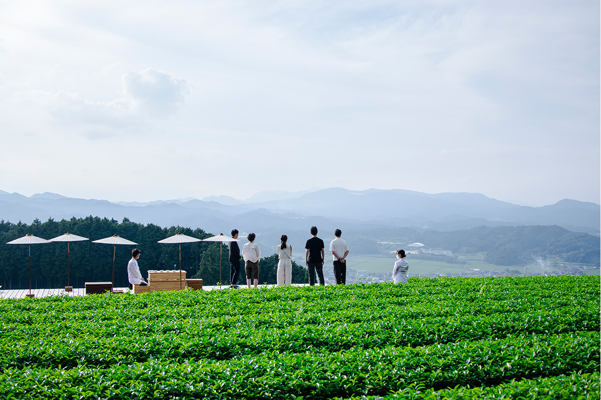
Летом 2022 года сюда приезжало жюри той самой премии. Члены жюри пили на помосте три вида чая с двумя видами сладостей в летних сумерках, под пение вечерних цикад. Церемонию вёл хозяин чайного сада «Китано тяэн», который больше 30 лет выращивает чай без пестицидов. Чай он подавал свой, и подавал так, чтобы раскрыть его лучше всего.
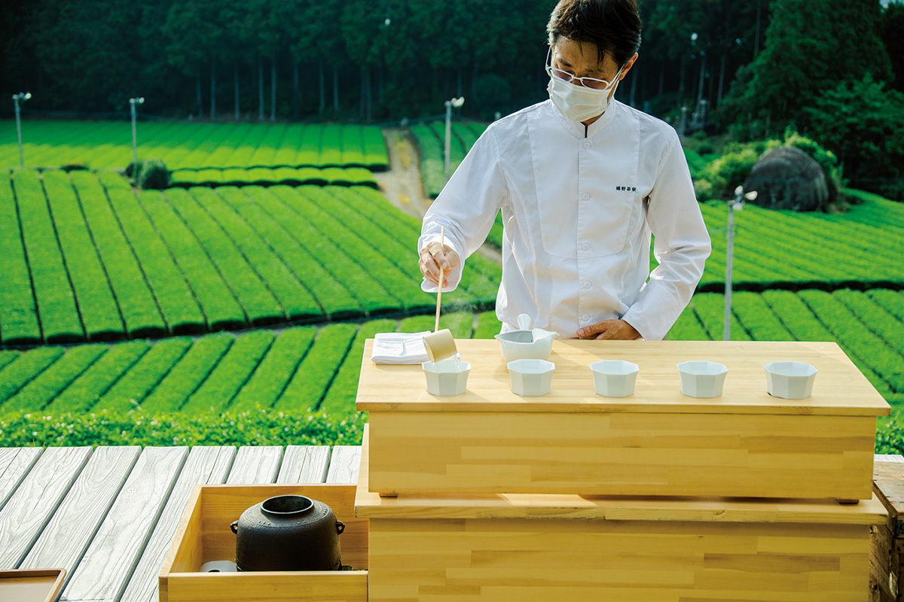
Один из членов жюри назвал чайный туризм Уресино образцом путешествий класса люкс для состоятельных гостей, а таких путешествий, по его словам, Японии как раз не хватает. В 2022 году церемония на «Тэнтядай» стоила от 10 000 иен на человека, в 2025 году 15 000 иен, чай и сладости включены.
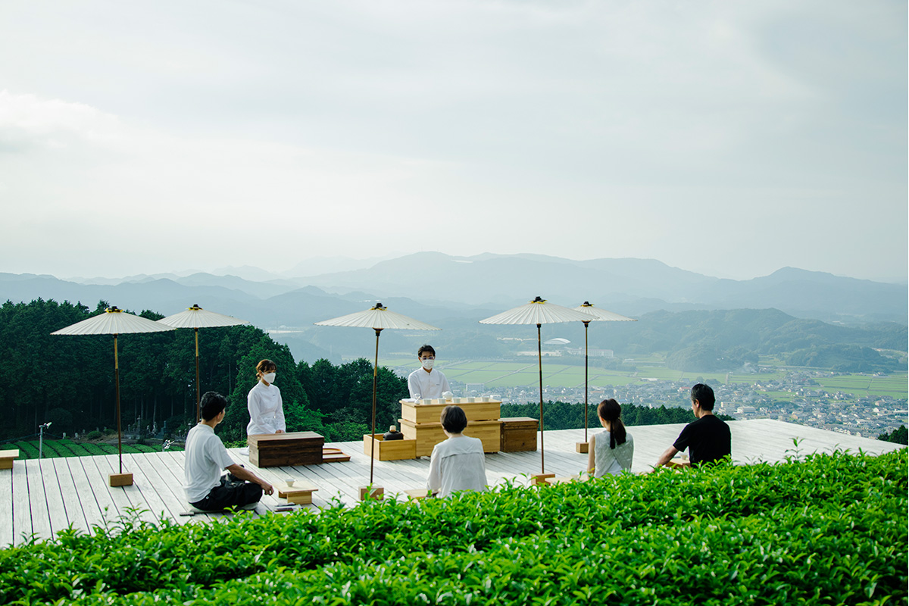
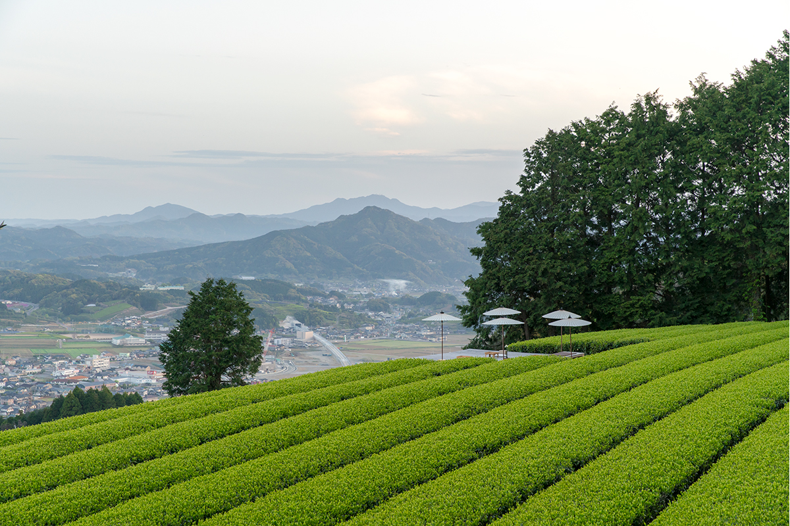
«Тэнтядай» фермы «Соэдзима-эн»
- Адрес
- префектура Сага, Уресино, Уресино-мати, Симоно, ко 427
- Цены / Вход
- 15 000 иен на человека, с чаем и сладостями; только по предварительной записи
- Как добраться
- от района онсэнов около 15 минут на машине, 25 минут на велосипеде
- Сайт
- tea-tourism.com
«Тято»: башня посреди чайного моря
«Тято», «чайная башня», стоит на поле фермы «Икэда ноэн», откуда видно залив Омура. Площадка поднята на три метра. Стоит сесть наверху и оглядеться, и кажется, что плывёшь в лодке по зелёному морю чайных кустов.
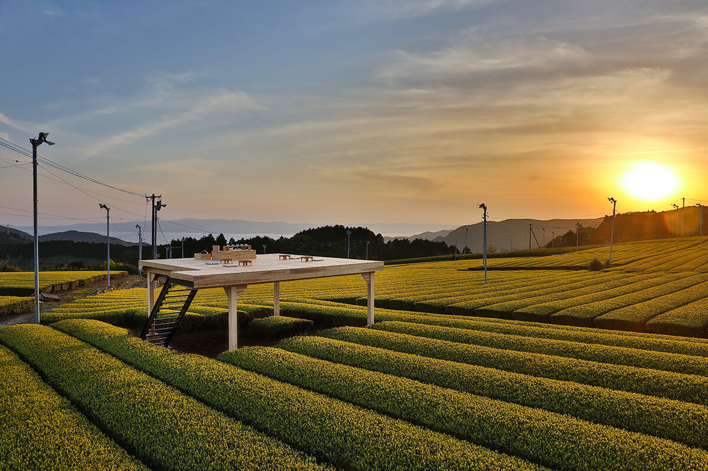
«Тято» фермы «Икэда ноэн»
- Адрес
- префектура Сага, Уресино, Уресино-мати, Иваягоути, оцу 3729-84
- Как добраться
- от района онсэнов около 20 минут на машине, 60 минут на велосипеде
- Сайт
- tea-tourism.com
Программы
Чайный дворецкий, чайный салон и чай на ходу
В 2020 году к чайному туризму добавились две программы, построенные вокруг рёканов на онсэне. «Тяхаку», «ночёвка с чаем», рассчитана на два дня и одну ночь. К каждой группе гостей приставлен свой чайный дворецкий, который отвечает за весь чай во время поездки: приветственный напиток, поездку на плантацию, церемонию на чайной площадке и подбор чая к блюдам за ужином. Участие нужно заранее согласовать с рёканом.
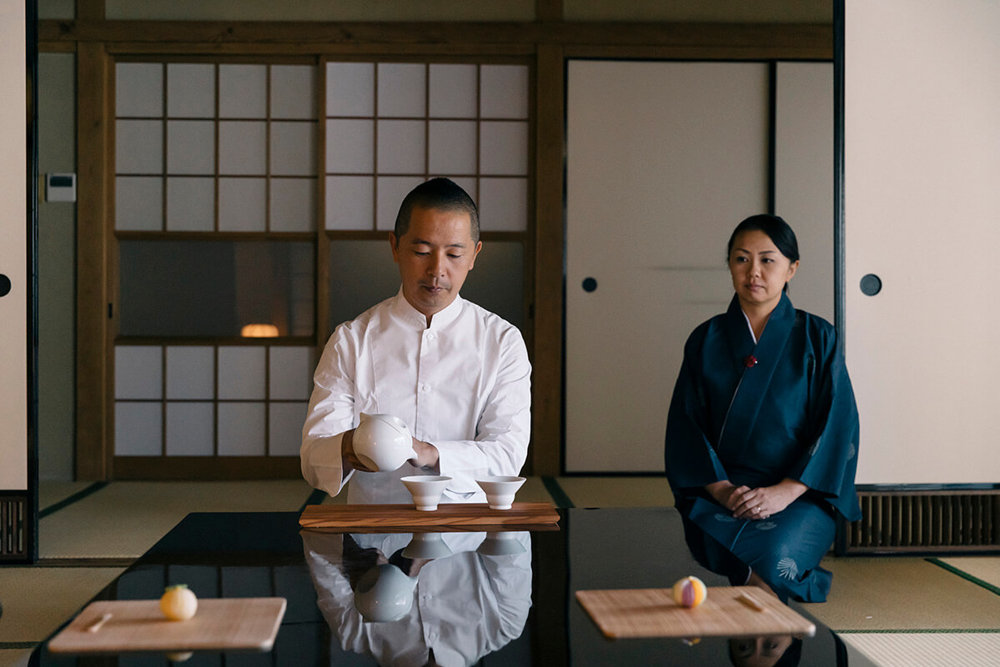
Вторая программа, «Тява», «разговор за чаем», проходит в отдельном салоне рёкана, не больше шести гостей за раз. Фермер заваривает чай на глазах у гостей, рассказывает о нём и о том, за что сам любит чай Уресино. За встречу подают три чашки чая и два вида сладостей. Пить его предлагают так, как пьют в баре: не торопясь и разговаривая с тем, кто наливает.
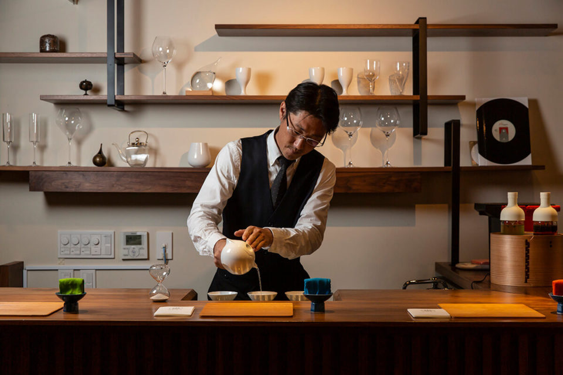
Хозяева рёканов и фермеры Уресино умеют принимать гостей и любят поговорить, а о чае знают очень много. Не стесняйтесь их расспрашивать: после такого разговора поездка запоминается совсем иначе.
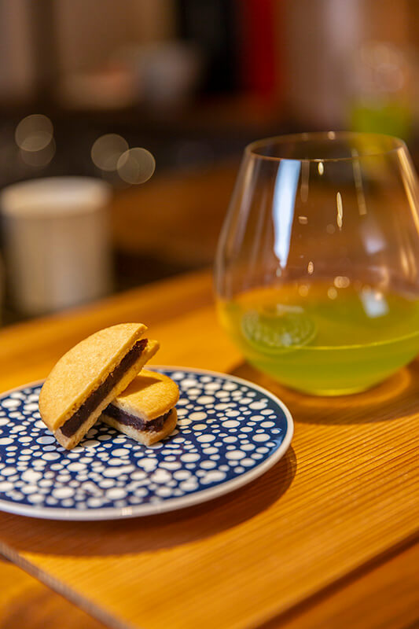
Чай в Уресино пьют и на ходу. Программа «Хотя», «прогулка с чаем», позволяет гулять по району онсэнов и достопримечательностям с чашкой чая в руках, а «Тярин» объединяет чайные площадки и прогулку на велосипеде.
Онсэн
Где остановиться
Источники Уресино известны уже 1300 лет. В районе онсэнов много старых рёканов, и именно они служат базой для чайных поездок.
Wataya Besso
Старинный рёкан Wataya Besso занимает 20 000 цубо, около 6,6 гектара, на берегу реки Уресино. Все его источники собственные. В рёкане четыре раздельных бани для мужчин и женщин, а в ресторане подают местный юдофу, тофу, сваренный в воде источника, и говядину Сага. Здесь же продают чай Уресино и фарфор Хидзэн-Ёсида. Номера и общие пространства переделывает штатный плотник рёкана.
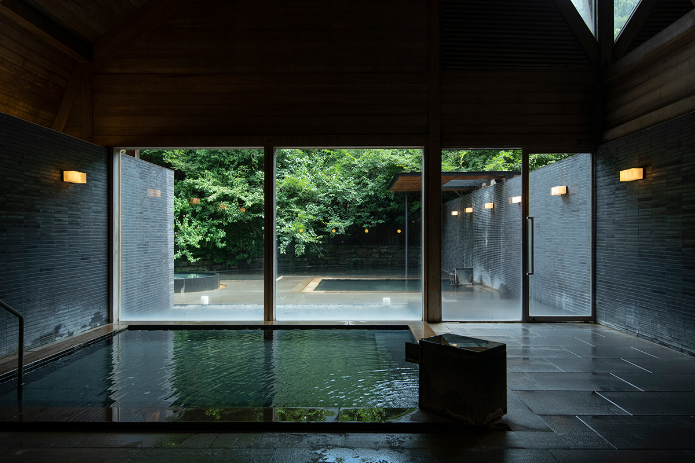
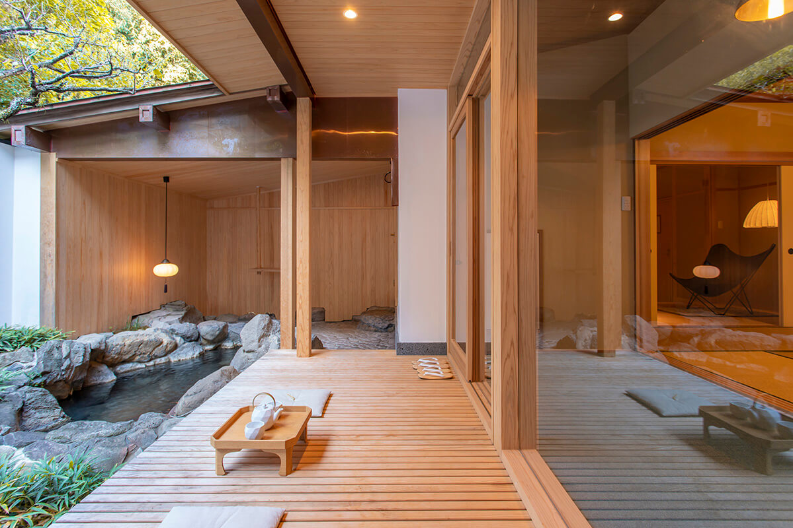
Вода в источнике натриевая гидрокарбонатно-хлоридная, около 80 °C, её не подогревают, но разбавляют. Есть проточные купальни и отдельная баня, которую можно снять для себя, в онсэн пускают и без ночёвки. В 2020 году ночь с завтраком и ужином стоила от 15 000 иен на человека при двухместном размещении (без налога), в 2025 году от 18 850 иен с налогом и обслуживанием.
Wataya Besso
- Адрес
- префектура Сага, Уресино, Уресино-мати, Симодзюку, оцу 738
- Телефон
- +81 954-42-0210
- Цены / Вход
- от 18 850 иен на человека за ночь с завтраком и ужином, налог и обслуживание включены
- Сайт
- wataya.co.jp
«Омурая»
Старинный рёкан «Омурая», по преданию, основан в 1830 году. Его пространство построено вокруг музыки и книг, а в 2020 году здесь работал лаундж, открытый и для тех, кто не живёт в рёкане. Вода натриевая гидрокарбонатно-хлоридная, около 92,5 °C, её не разбавляют и не подогревают. В рёкане есть проточные купальни и отдельная баня, в онсэн пускают и без ночёвки. В 2020 году ночь с завтраком и ужином стоила от 13 000 иен на человека при двухместном размещении (без налога).
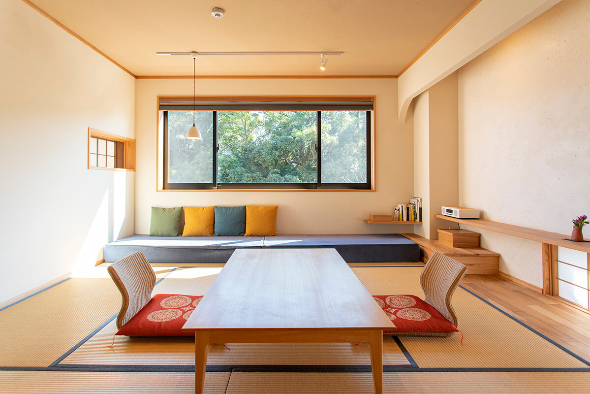
«Омурая»
- Адрес
- префектура Сага, Уресино, Уресино-мати, Симодзюку, оцу 848
- Телефон
- +81 954-43-1234
- Цены / Вход
- от 13 000 иен на человека за ночь с завтраком и ужином, без налога
- Сайт
- oomuraya.co.jp
Онсэн для всех
Осенью 2022 года в Уресино открылась станция синкансэна Уресино-Онсэн, и город заранее готовился к гостям в возрасте, людям с инвалидностью и иностранцам. Город поставил цель стать самым доступным курортом Японии. По данным 2021 года, в 13 рёканах было 20 номеров, куда можно въехать на коляске, с поручнями в ванной и электрическими кроватями, а все такие рёканы собраны в отдельном путеводителе. У ножной ванны в районе онсэнов оставили место для колясок, а для курорта сшили юкату из двух частей, которую можно надеть, не вставая с коляски. Вместе с рёканами и городом этим занимается центр безбарьерного туризма Сага-Уресино: помогает выбрать и забронировать рёкан, найти помощника для купания в онсэне и взять напрокат нужное оборудование.
Фото: Кадзуя Хаяси, Хиромаса Оцука.